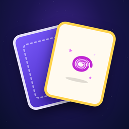

Pairwander Support
Contact
Found a bug or have a question? Write to meltembkr@gmail.com. We usually reply within 2 working days. Please include your device model and the level you were playing.
Frequently asked questions
- How do I play?
- Flip two cards at a time and find every matching pair. Fewer misses earn more stars. The first levels of each world let you memorise the board before the cards turn over.
- What are timed and shuffle levels?
- On ⏱ timed levels you must find all pairs before the clock runs out. On ⇄ shuffle levels two cards swap places after every two misses.
- How do I unlock new worlds?
- Clear the last level of a world to open the next one. There are 6 worlds with 12 levels each.
- How do hints work?
- A hint briefly shows one matching pair. You start with 3 and earn one each time you clear a level with 3 stars for the first time. On iPhone, iPad and Android you can also watch an optional short video to get a hint when you run out.
- Are there ads or purchases?
- There are no in-app purchases. The free iOS and Android versions show an occasional short ad between levels (never during play) and the optional hint video. The Steam version has no ads.
- Where is my progress saved?
- Only on your device. Deleting the app or clearing its data resets your progress.
- Can I play in Turkish?
- Yes. Tap EN/TR on the main menu, in a level or in the pause menu. Your choice is remembered.
- How do I turn off the music?
- Tap the music button at the top of the screen. Sound effects can be turned off in Settings.
Pairwander Destek
İletişim
Hata bildirimi ve sorularınız için: meltembkr@gmail.com. Genellikle 2 iş günü içinde yanıt veririz. Lütfen cihaz modelinizi ve oynadığınız seviyeyi yazın.
Sık sorulan sorular
- Nasıl oynanır?
- Her seferinde iki kart açın ve tüm eşleri bulun. Daha az hata daha çok yıldız kazandırır. Her dünyanın ilk seviyelerinde kartlar kapanmadan önce tahtayı ezberleyebilirsiniz.
- Süreli ve karışık seviyeler nedir?
- ⏱ Süreli seviyelerde tüm eşleri süre bitmeden bulmalısınız. ⇄ Karışık seviyelerde her iki hatadan sonra iki kart yer değiştirir.
- Yeni dünyalar nasıl açılır?
- Bir dünyanın son seviyesini bitirince sıradaki dünya açılır. Her biri 12 seviyeli 6 dünya vardır.
- İpuçları nasıl çalışır?
- İpucu bir eşi kısa süreliğine gösterir. 3 ipucuyla başlarsınız ve bir seviyeyi ilk kez 3 yıldızla bitirdiğinizde bir tane kazanırsınız. iPhone, iPad ve Android'de ipucunuz bitince isteğe bağlı kısa bir video izleyerek de ipucu alabilirsiniz.
- Reklam veya satın alma var mı?
- Uygulama içi satın alma yoktur. Ücretsiz iOS ve Android sürümlerinde seviyeler arasında ara sıra kısa reklam (oyun sırasında asla) ve isteğe bağlı ipucu videosu vardır. Steam sürümü reklamsızdır.
- İlerlemem nerede saklanır?
- Yalnızca cihazınızda. Uygulamayı silmek veya verilerini temizlemek ilerlemeyi sıfırlar.
- Müziği nasıl kapatırım?
- Ekranın üstündeki müzik düğmesine dokunun. Ses efektlerini Ayarlar'dan kapatabilirsiniz.